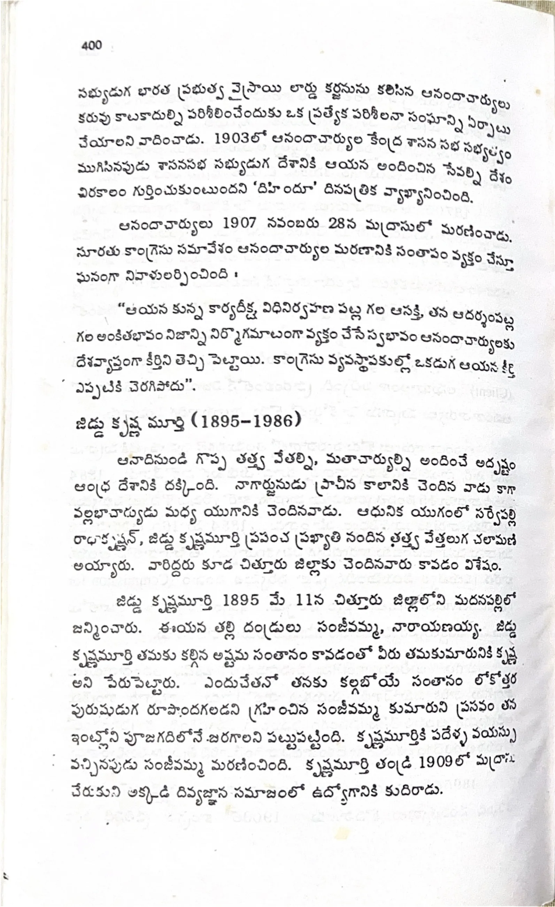

ముద్రిత పుట 400
scanతో మాన్యువల్గా ధృవీకరించిన పాఠ్యం

సభ్యుడుగ భారత ప్రభుత్వ వైస్రాయి లార్డు కర్జనును కలిసిన ఆనందాచార్యులు కరువు కాటకాదుల్ని పరిశీలించేందుకు ఒక ప్రత్యేక పరిశీలనా సంఘాన్ని ఏర్పాటు చేయాలని వాదించాడు. 1903లో ఆనందాచార్యుల కేంద్ర శాసన సభ సభ్యత్వం ముగిసినపుడు శాసనసభ సభ్యుడుగ దేశానికి ఆయన అందించిన సేవల్ని దేశం చిరకాలం గుర్తించుకుంటుందని ‘హిందూ’ దినపత్రిక వ్యాఖ్యానించింది. ఆనందాచార్యులు 1907 నవంబరు 28న మద్రాసులో మరణించాడు. సూరతు కాంగ్రెస్ సమావేశం ఆనందాచార్యుల మరణానికి సంతాపం వ్యక్తం చేస్తూ ఘనంగా నివాళులర్పించింది : “ఆయన కున్న కార్యదీక్ష, విధినిర్వహణ పట్ల గల ఆసక్తి, తన ఆదర్శంపట్ల గల అంకితభావం నిజాన్ని నిర్మొహమాటంగా వ్యక్తం చేసే స్వభావం ఆనందాచార్యులకు దేశవ్యాప్తంగా కీర్తిని తెచ్చి పెట్టాయి. కాంగ్రెస్ వ్యవస్థాపకుల్లో ఒకడుగ ఆయన కీర్తి ఎప్పటికి చెరిగిపోదు”. జిడ్డు కృష్ణ మూర్తి (1895-1986) అనాదినుండి గొప్ప తత్త్వ వేత్తల్ని, మతాచార్యుల్ని అందించే అదృష్టం ఆంధ్ర దేశానికి దక్కింది. నాగార్జునుడు ప్రాచీన కాలానికి చెందిన వాడు కాగా వల్లభాచార్యుడు మధ్య యుగానికి చెందినవాడు. ఆధునిక యుగంలో సర్వేపల్లి రాధాకృష్ణన్, జిడ్డు కృష్ణమూర్తి ప్రపంచ ప్రఖ్యాతి నందిన తత్త్వ వేత్తలుగ చలామణి అయ్యారు. వారిద్దరు కూడా చిత్తూరు జిల్లాకు చెందినవారు కావడం విశేషం. జిడ్డు కృష్ణమూర్తి 1895 మే 11న చిత్తూరు జిల్లాలోని మదనపల్లిలో జన్మించారు. ఈయన తల్లి దండ్రులు సంజీవమ్మ, నారాయణయ్య. జిడ్డు కృష్ణమూర్తి తమకు కల్గిన అష్టమ సంతానం కావడంతో వీరు తమకుమారునికి కృష్ణ అని పేరుపెట్టారు. ఎందుచేతనో తనకు కల్గబోయే సంతానం లోకోత్తర పురుషుడుగ రూపొందగలడని గ్రహించిన సంజీవమ్మ కుమారుని ప్రసవం తన ఇంట్లోని పూజగదిలోనే జరగాలని పట్టుపట్టింది. కృష్ణమూర్తికి పదేళ్ళ వయస్సు వచ్చినపుడు సంజీవమ్మ మరణించింది. కృష్ణమూర్తి తండ్రి 1909లో మద్రాసు చేరుకుని అక్కడి దివ్యజ్ఞాన సమాజంలో ఉద్యోగానికి కుదిరాడు.